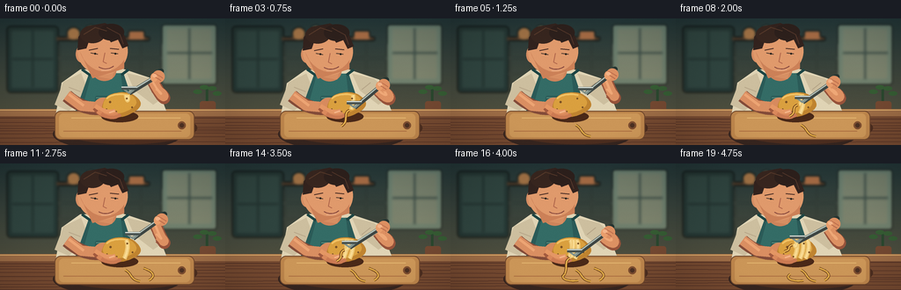
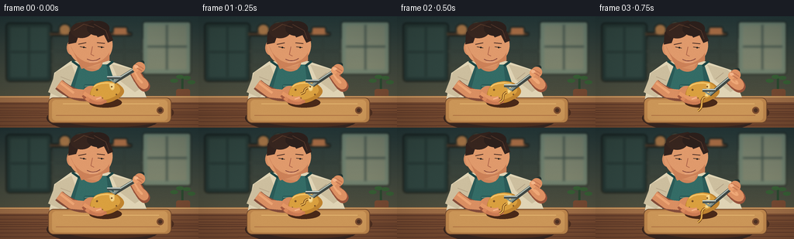

CODING AGENTS AS PIXEL WORLD MODELS
traex/GPT-5.6-Sol · motion_rationality_0022
点击播放 · 原生 RGB 像素
逐轮保存的候选
回放视频、检查图与代码变化。
每份候选均可单独播放。实际图片检查记录在下方工具轨迹中。
候选 01播放与检查图
点击播放 · 原生 RGB 像素


展开代码变化
--- 上一保存版本
+++ 本次保存版本
@@ -0,0 +1,279 @@
+from pathlib import Path
+import math
+import numpy as np
+from PIL import Image, ImageDraw, ImageFilter
+import artifact_io
+
+W,H,N = 256,144,20
+S=4
+rng=np.random.default_rng(2202)
+
+def sc(v): return int(round(v*S))
+def box(b): return tuple(sc(v) for v in b)
+def pts(p): return [(sc(x),sc(y)) for x,y in p]
+
+def line(draw, p, fill, width, joint='curve'):
+ draw.line(pts(p), fill=fill, width=sc(width), joint=joint)
+
+def ellipse(draw,b,fill,outline=None,width=1):
+ draw.ellipse(box(b),fill=fill,outline=outline,width=sc(width) if outline else 1)
+def polygon(draw,p,fill): draw.polygon(pts(p),fill=fill)
+def rounded(draw,b,r,fill,outline=None,width=1):
+ draw.rounded_rectangle(box(b),radius=sc(r),fill=fill,outline=outline,width=sc(width))
+
+def cubic(p0,p1,p2,p3,n=25):
+ out=[]
+ for t in np.linspace(0,1,n):
+ u=1-t
+ out.append((u**3*p0[0]+3*u*u*t*p1[0]+3*u*t*t*p2[0]+t**3*p3[0],
+ u**3*p0[1]+3*u*u*t*p1[1]+3*u*t*t*p2[1]+t**3*p3[1]))
+ return out
+
+def rotated_ellipse(cx,cy,rx,ry,ang, wobble=0, n=60):
+ a=math.radians(ang); ca,sa=math.cos(a),math.sin(a)
+ out=[]
+ for i,t in enumerate(np.linspace(0,2*math.pi,n,endpoint=False)):
+ rr=1+wobble*math.sin(3*t+0.7)+wobble*.5*math.sin(5*t)
+ x=rx*rr*math.cos(t); y=ry*rr*math.sin(t)
+ out.append((cx+x*ca-y*sa,cy+x*sa+y*ca))
+ return out
+
+def skin_gradient_patch(im, shape_pts, bbox0, top=(229,157,112), bottom=(180,100,67)):
+ mask=Image.new('L',im.size,0); md=ImageDraw.Draw(mask); md.polygon(pts(shape_pts),fill=255)
+ lay=Image.new('RGB',im.size)
+ ar=np.zeros((H*S,W*S,3),dtype=np.uint8)
+ y0,y1=sc(bbox0[1]),sc(bbox0[3])
+ for y in range(max(0,y0),min(H*S,y1+1)):
+ t=(y-y0)/max(1,y1-y0)
+ ar[y,:,:]=[int(top[k]*(1-t)+bottom[k]*t) for k in range(3)]
+ lay=Image.fromarray(ar)
+ im.paste(lay,(0,0),mask)
+
+def draw_background(frame):
+ # Warm cinematic kitchen gradient
+ yy=np.linspace(0,1,H*S)[:,None,None]
+ top=np.array([35,54,55])[None,None,:]
+ bot=np.array([93,87,65])[None,None,:]
+ arr=np.tile((top*(1-yy)+bot*yy),(1,W*S,1)).astype(np.uint8)
+ im=Image.fromarray(arr,'RGB'); d=ImageDraw.Draw(im)
+ # soft window and cabinets on a blurred background layer
+ bg=Image.new('RGBA',im.size,(0,0,0,0)); b=ImageDraw.Draw(bg)
+ rounded(b,(8,9,66,84),4,(36,53,50,255)); rounded(b,(13,14,61,79),2,(47,68,63,255))
+ line(b,[(37,14),(37,78)],(31,47,45,220),2); line(b,[(14,46),(60,46)],(31,47,45,220),2)
+ # window glow
+ rounded(b,(184,7,246,75),3,(145,167,143,150)); rounded(b,(190,12,240,68),2,(189,194,159,125))
+ line(b,[(215,11),(215,69)],(69,86,78,180),3); line(b,[(190,39),(241,39)],(69,86,78,180),3)
+ # shelves and dishes
+ rounded(b,(64,21,170,25),2,(75,56,40,255))
+ ellipse(b,(76,10,91,24),(178,122,71,220)); ellipse(b,(96,8,110,24),(191,169,119,220))
+ rounded(b,(121,12,138,24),2,(104,139,126,220)); rounded(b,(146,14,164,24),2,(181,113,69,220))
+ # backsplash tiles
+ for x in range(68,184,23): line(b,[(x,29),(x,80)],(111,114,95,65),1)
+ for y in (45,63): line(b,[(67,y),(184,y)],(111,114,95,65),1)
+ bg=bg.filter(ImageFilter.GaussianBlur(sc(1.6)))
+ im=Image.alpha_composite(im.convert('RGBA'),bg)
+ d=ImageDraw.Draw(im)
+ # plant silhouette at right
+ line(d,[(235,79),(235,106)],(42,71,46,255),3)
+ for a in [-2.5,-1.8,-1.1,-.45]:
+ x=235+math.cos(a)*13; y=91+math.sin(a)*13
+ ellipse(d,(x-5,y-2.5,x+5,y+2.5),(53,91,51,220))
+ rounded(d,(227,94,245,111),3,(115,72,49,255))
+ # counter back edge
+ polygon(d,[(0,103),(256,103),(256,144),(0,144)],(116,73,48,255))
+ polygon(d,[(0,103),(256,103),(256,111),(0,111)],(155,107,69,255))
+ line(d,[(0,104),(256,104)],(218,169,105,255),1)
+ # subtle wood grain
+ for j in range(9):
+ y=113+j*3.9+1.2*math.sin(frame*.2+j)
+ line(d,[(0,y),(256,y+1.8*math.sin(j*.8))],(87,52,38,90),1)
+ return im
+
+def draw_person(im, frame):
+ d=ImageDraw.Draw(im)
+ bob=.45*math.sin(frame*.37)
+ # body shadow and torso
+ ellipse(d,(60,113,207,150),(54,37,31,110))
+ # shoulders/shirt
+ polygon(d,[(70,73+bob),(91,58+bob),(139,57+bob),(175,69+bob),(193,116),(62,116)],(224,212,181,255))
+ # fabric shaded sleeves
+ polygon(d,[(72,72+bob),(92,62+bob),(101,85),(78,105),(62,98)],(205,191,159,255))
+ polygon(d,[(144,62+bob),(169,68+bob),(190,87),(174,98),(153,82)],(205,191,159,255))
+ line(d,[(78,78),(91,83)],(182,165,136,255),1)
+ line(d,[(165,73),(155,81)],(182,165,136,255),1)
+ # apron
+ polygon(d,[(101,63+bob),(140,62+bob),(158,116),(82,116)],(43,91,88,255))
+ polygon(d,[(104,63+bob),(137,62+bob),(143,115),(90,115)],(52,108,102,255))
+ line(d,[(103,65),(93,58)],(29,69,68,255),3); line(d,[(138,64),(146,58)],(29,69,68,255),3)
+ rounded(d,(108,88,137,108),2,(42,91,88,255)); line(d,[(109,90),(136,90)],(93,142,126,255),1)
+ # neck
+ ellipse(d,(105,48+bob,132,71+bob),(205,132,91,255))
+ polygon(d,[(105,54+bob),(132,52+bob),(127,69+bob),(111,66+bob)],(215,143,99,255))
+ # ear behind
+ ellipse(d,(86,31+bob,99,50+bob),(213,141,99,255)); ellipse(d,(89,35+bob,95,45+bob),(171,98,70,255))
+ # head
+ ellipse(d,(88,10+bob,145,64+bob),(224,154,108,255))
+ # face lower shading
+ polygon(d,cubic((91,38+bob),(99,62+bob),(127,69+bob),(141,47+bob),18)+[(141,57+bob),(105,68+bob)],(204,129,88,150))
+ # hair mass
+ polygon(d,[(88,36+bob),(89,21+bob),(98,9+bob),(119,5+bob),(139,14+bob),(146,31+bob),(139,34+bob),(134,24+bob),(126,27+bob),(120,18+bob),(111,24+bob),(104,17+bob),(98,34+bob)],(51,35,30,255))
+ ellipse(d,(91,8+bob,119,28+bob),(56,38,31,255)); ellipse(d,(112,6+bob,141,25+bob),(45,32,28,255))
+ # loose hair highlights
+ line(d,[(95,18+bob),(108,10+bob),(121,14+bob)],(87,58,43,255),1)
+ line(d,[(121,10+bob),(136,18+bob),(140,29+bob)],(82,54,42,255),1)
+ # eyebrows and downward-looking eyes
+ line(d,[(101,36+bob),(111,34+bob)],(79,49,39,255),1.2)
+ line(d,[(125,34+bob),(135,35+bob)],(79,49,39,255),1.2)
+ line(d,[(103,39+bob),(111,40.5+bob)],(55,43,38,255),1)
+ line(d,[(126,39+bob),(134,40+bob)],(55,43,38,255),1)
+ # eye glints aimed down
+ ellipse(d,(107,39+bob,109,41+bob),(30,29,26,255)); ellipse(d,(130,39+bob,132,41+bob),(30,29,26,255))
+ # nose and concentrated soft smile
+ line(d,[(119,39+bob),(117,49+bob),(121,51+bob)],(175,101,75,255),1)
+ line(d,cubic((112,55+bob),(117,58+bob),(124,58+bob),(129,54+bob),12),(125,64,58,255),1)
+ line(d,[(115,59+bob),(126,58+bob)],(232,171,137,180),1)
+
+
+def draw_board(im):
+ d=ImageDraw.Draw(im)
+ # broad cutting board in foreground
+ ellipse(d,(65,106,224,143),(75,45,31,120))
+ rounded(d,(62,105,221,138),7,(187,132,75,255),outline=(113,72,44,255),width=1)
+ rounded(d,(67,108,216,135),5,(203,150,88,255))
+ line(d,[(72,128),(206,128)],(173,113,67,160),1)
+ line(d,[(81,113),(205,113)],(227,181,112,150),1)
+ ellipse(d,(202,117,211,126),(124,77,47,255)); ellipse(d,(204,119,209,124),(75,48,34,255))
+
+def draw_accumulated_peels(im, completed, frame):
+ d=ImageDraw.Draw(im,'RGBA')
+ curls=[[(142,121),(151,126),(147,132),(159,134)],
+ [(163,119),(173,122),(178,128),(169,133),(181,134)],
+ [(130,126),(123,130),(132,135),(145,133)],
+ [(181,117),(190,121),(187,127),(197,130)]]
+ for i in range(min(completed,len(curls))):
+ p=curls[i]
+ line(d,cubic(p[0],p[1],p[2],p[3],26),(117,74,31,130),3)
+ line(d,cubic(p[0],p[1],p[2],p[3],26),(221,166,67,255),1.5)
+ # pale inner edge
+ q=[(x,y-.7) for x,y in cubic(p[0],p[1],p[2],p[3],26)]
+ line(d,q,(246,195,91,210),.55)
+
+def draw_arms_potato_peeler(im, frame):
+ d=ImageDraw.Draw(im,'RGBA')
+ local=frame%6; cycle=frame//6
+ seq=[0,.22,.52,.82,1,.22]
+ prog=seq[local]
+ reset=(local==5)
+ completed=cycle + (1 if local>=4 else 0)
+ # Left forearm behind potato, gently compensating rotation
+ rot=-9 + cycle*2.5 + (2.5*max(0,(local-4)))
+ # arm from rolled sleeve to wrist
+ fore=cubic((76,88),(85,96),(98,104),(115,102),20)
+ line(d,fore,(132,76,57,90),15)
+ line(d,[(76,87),(92,99),(114,101)],(218,143,98,255),12)
+ line(d,[(78,86),(95,99)],(237,165,116,210),3)
+ # rear palm
+ ellipse(d,(106,90,129,111),(216,139,94,255))
+ # potato shadow
+ ellipse(d,(115,105,157,118),(74,41,24,90))
+ potato=rotated_ellipse(137,98,22,14,rot,.035)
+ polygon(d,potato,(192,132,48,255))
+ # potato lit side using inset organic patch
+ inner=rotated_ellipse(135.5,96.2,19,11.5,rot,.025)
+ polygon(d,inner,(218,160,63,255))
+ # highlight
+ line(d,cubic((121,91),(126,86),(137,85),(145,87),18),(243,195,101,190),2)
+ # previously peeled strips: vertical-ish pale tracks following curved body
+ track_x=[145,138,151]
+ for k in range(min(cycle,3)):
+ x=track_x[k]
+ p=cubic((x-2,87),(x+1,91),(x,101),(x-4,108),18)
+ line(d,p,(239,202,120,230),5)
+ line(d,p,(250,220,150,170),2)
+ # current peeled reveal grows directly under blade
+ y_contact=87+20*prog
+ x_contact=145-cycle*2.8
+ if not reset:
+ p=cubic((x_contact,87),(x_contact+1,91),(x_contact,99),(x_contact-2,y_contact),18)
+ line(d,p,(240,202,119,255),4.7)
+ line(d,p,(251,222,151,190),1.5)
+ # potato freckles remain anchored and shift subtly with rotation
+ spots=[(-12,-3,1.3),(7,-7,1.1),(13,3,1.0),(-5,8,1.0),(-16,5,.8)]
+ for j,(sx,sy,rr) in enumerate(spots):
+ # hide a few once track overlaps
+ xx=137+sx+cycle*.5; yy=98+sy
+ ellipse(d,(xx-rr,yy-rr,xx+rr,yy+rr),(129,86,38,180))
+ ellipse(d,(xx-.35,yy-.35,xx+.35,yy+.35),(93,61,29,170))
+ # supporting fingers in front of potato, credible grip
+ line(d,cubic((108,101),(113,108),(120,112),(129,109),18),(164,91,63,120),7)
+ line(d,cubic((108,99),(114,104),(123,108),(131,105),18),(229,151,101,255),5)
+ line(d,cubic((111,105),(117,111),(127,113),(134,108),18),(218,137,92,255),5)
+ line(d,cubic((115,108),(121,113),(131,114),(137,109),18),(204,123,83,255),4)
+ # nails
+ line(d,[(124,107),(130,105)],(247,184,141,180),1.5)
+ # live peel first (behind blade), curls as it lengthens
+ if not reset and prog>.05:
+ start=(x_contact-4,y_contact+1)
+ length=5+17*prog
+ curve=cubic(start,(x_contact-12,y_contact+4),(x_contact-4,y_contact+length*.7),(x_contact-13,y_contact+length),28)
+ line(d,curve,(119,71,29,130),3.2)
+ line(d,curve,(234,177,71,255),1.6)
+ line(d,[(x-.4,y) for x,y in curve],(251,207,111,220),.6)
+ # Peeler geometry: blade kept against curved surface during stroke; lifted on return
+ lift=7 if reset else 0
+ bx=x_contact+lift; by=y_contact-(4 if reset else 0)
+ # handle endpoint follows blade, in right/up direction
+ hx=178+lift*.55; hy=66+prog*12-(5 if reset else 0)
+ # right forearm behind hand from sleeve at right
+ elbow=(181,85)
+ wrist=(174+lift*.4,72+prog*12-(5 if reset else 0))
+ line(d,cubic((181,84),(190,91),(188,98),wrist,22),(151,83,59,100),14)
+ line(d,cubic((180,82),(190,89),(187,96),wrist,22),(221,145,99,255),11)
+ line(d,cubic((177,80),(186,86),(185,92),(wrist[0]-1,wrist[1]-1),20),(239,168,119,160),2.5)
+ # metal stem behind grip
+ line(d,[(hx,hy),(bx+2,by-2)],(62,70,67,255),5)
+ line(d,[(hx-1,hy-1),(bx+1,by-3)],(180,193,184,255),1.6)
+ # dark ergonomic handle
+ line(d,[(hx+5,hy-7),(hx,hy)],(42,60,56,255),7)
+ line(d,[(hx+5,hy-8),(hx+1,hy-1)],(74,96,86,255),3)
+ ellipse(d,(hx+2,hy-9,hx+8,hy-3),(38,52,49,255))
+ # blade Y arms and blade edge horizontal/tangent
+ line(d,[(bx+2,by-2),(bx-5,by-7)],(128,145,138,255),2.2)
+ line(d,[(bx+2,by-2),(bx+8,by-7)],(128,145,138,255),2.2)
+ line(d,[(bx-7,by-8),(bx+10,by-8)],(73,83,80,255),4)
+ line(d,[(bx-7,by-9),(bx+10,by-9)],(218,227,220,255),1.2)
+ # right gripping hand over handle, thumb and knuckles
+ ellipse(d,(hx-5,hy-7,hx+9,hy+7),(221,144,98,255))
+ ellipse(d,(hx-7,hy-4,hx+1,hy+6),(233,158,108,255))
+ line(d,cubic((hx-5,hy-1),(hx-1,hy+1),(hx+3,hy+3),(hx+5,hy+5),12),(184,106,75,210),1)
+ line(d,cubic((hx-3,hy-4),(hx+1,hy-2),(hx+5,hy),(hx+7,hy+2),12),(190,111,77,180),1)
+ # thumbnail
+ ellipse(d,(hx-5,hy-3,hx,hy+1),(244,180,137,220))
+ return completed
+
+def render(frame):
+ im=draw_background(frame)
+ draw_person(im,frame)
+ draw_board(im)
+ completed=draw_arms_potato_peeler(im,frame)
+ draw_accumulated_peels(im,completed,frame)
+ # redraw nearest peel tail/fingers layering? A tiny foreground glint and ambient vignette
+ # lighting overlay
+ arr=np.asarray(im.convert('RGB')).astype(np.float32)
+ yy,xx=np.mgrid[0:H*S,0:W*S]
+ # soft focus vignette preserving central action
+ cx,cy=sc(137),sc(82)
+ r=((xx-cx)/(W*S*.72))**2+((yy-cy)/(H*S*.85))**2
+ fac=np.clip(1-.22*np.maximum(r-.22,0),.74,1)[...,None]
+ arr*=fac
+ # fine film-like texture, fixed spatial pattern + min temporal variation
+ noise=np.random.default_rng(51).normal(0,1.0,arr.shape[:2])[...,None]
+ arr=np.clip(arr+noise,0,255).astype(np.uint8)
+ im=Image.fromarray(arr).resize((W,H),Image.Resampling.LANCZOS)
+ return np.asarray(im,dtype=np.uint8)
+
+def main():
+ frames=np.stack([render(i) for i in range(N)],axis=0)
+ artifact_io.save(frames,Path(__file__).resolve().parent)
+
+if __name__=='__main__': main()
可观测工具轨迹
实际执行的命令与返回图片。
命令 1exit 0
/bin/bash -lc "ls -la && printf '\\n--- prompt.txt ---\\n' && cat prompt.txt && printf '\\n--- GENERATION_RULES.md ---\\n' && cat GENERATION_RULES.md && printf '\\n--- task_spec.json ---\\n' && cat task_spec.json"
命令 2exit 0
/bin/bash -lc "sed -n '1,260p' artifact_io.py"
命令 3exit 0
/bin/bash -lc "cat > generate.py <<'PY'
from pathlib import Path
import math
import numpy as np
from PIL import Image, ImageDraw, ImageFilter
import artifact_io
W,H,N = 256,144,20
S=4
rng=np.random.default_rng(2202)
def sc(v): return int(round(v*S))
def box(b): return tuple(sc(v) for v in b)
def pts(p): return [(sc(x),sc(y)) for x,y in p]
def line(draw, p, fill, width, joint='curve'):
draw.line(pts(p), fill=fill, width=sc(width), joint=joint)
def ellipse(draw,b,fill,outline=None,width=1):
draw.ellipse(box(b),fill=fill,outline=outline,width=sc(width) if outline else 1)
def polygon(draw,p,fill): draw.polygon(pts(p),fill=fill)
def rounded(draw,b,r,fill,outline=None,width=1):
draw.rounded_rectangle(box(b),radius=sc(r),fill=fill,outline=outline,width=sc(width))
def cubic(p0,p1,p2,p3,n=25):
out=[]
for t in np.linspace(0,1,n):
u=1-t
out.append((u**3*p0[0]+3*u*u*t*p1[0]+3*u*t*t*p2[0]+t**3*p3[0],
u**3*p0[1]+3*u*u*t*p1[1]+3*u*t*t*p2[1]+t**3*p3[1]))
return out
def rotated_ellipse(cx,cy,rx,ry,ang, wobble=0, n=60):
a=math.radians(ang); ca,sa=math.cos(a),math.sin(a)
out=[]
for i,t in enumerate(np.linspace(0,2*math.pi,n,endpoint=False)):
rr=1+wobble*math.sin(3*t+0.7)+wobble*.5*math.sin(5*t)
x=rx*rr*math.cos(t); y=ry*rr*math.sin(t)
out.append((cx+x*ca-y*sa,cy+x*sa+y*ca))
return out
def skin_gradient_patch(im, shape_pts, bbox0, top=(229,157,112), bottom=(180,100,67)):
mask=Image.new('L',im.size,0); md=ImageDraw.Draw(mask); md.polygon(pts(shape_pts),fill=255)
lay=Image.new('RGB',im.size)
ar=np.zeros((H*S,W*S,3),dtype=np.uint8)
y0,y1=sc(bbox0[1]),sc(bbox0[3])
for y in range(max(0,y0),min(H*S,y1+1)):
t=(y-y0)/max(1,y1-y0)
ar[y,:,:]=[int(top[k]*(1-t)+bottom[k]*t) for k in range(3)]
lay=Image.fromarray(ar)
im.paste(lay,(0,0),mask)
def draw_background(frame):
# Warm cinematic kitchen gradient
yy=np.linspace(0,1,H*S)[:,None,None]
top=np.array([35,54,55])[None,None,:]
bot=np.array([93,87,65])[None,None,:]
arr=np.tile((top*(1-yy)+bot*yy),(1,W*S,1)).astype(np.uint8)
im=Image.fromarray(arr,'RGB'); d=ImageDraw.Draw(im)
# soft window and cabinets on a blurred background layer
bg=Image.new('RGBA',im.size,(0,0,0,0)); b=ImageDraw.Draw(bg)
rounded(b,(8,9,66,84),4,(36,53,50,255)); rounded(b,(13,14,61,79),2,(47,68,63,255))
line(b,[(37,14),(37,78)],(31,47,45,220),2); line(b,[(14,46),(60,46)],(31,47,45,220),2)
# window glow
rounded(b,(184,7,246,75),3,(145,167,143,150)); rounded(b,(190,12,240,68),2,(189,194,159,125))
line(b,[(215,11),(215,69)],(69,86,78,180),3); line(b,[(190,39),(241,39)],(69,86,78,180),3)
# shelves and dishes
rounded(b,(64,21,170,25),2,(75,56,40,255))
ellipse(b,(76,10,91,24),(178,122,71,220)); ellipse(b,(96,8,110,24),(191,169,119,220))
rounded(b,(121,12,138,24),2,(104,139,126,220)); rounded(b,(146,14,164,24),2,(181,113,69,220))
# backsplash tiles
for x in range(68,184,23): line(b,[(x,29),(x,80)],(111,114,95,65),1)
for y in (45,63): line(b,[(67,y),(184,y)],(111,114,95,65),1)
bg=bg.filter(ImageFilter.GaussianBlur(sc(1.6)))
im=Image.alpha_composite(im.convert('RGBA'),bg)
d=ImageDraw.Draw(im)
# plant silhouette at right
line(d,[(235,79),(235,106)],(42,71,46,255),3)
for a in [-2.5,-1.8,-1.1,-.45]:
x=235+math.cos(a)*13; y=91+math.sin(a)*13
ellipse(d,(x-5,y-2.5,x+5,y+2.5),(53,91,51,220))
rounded(d,(227,94,245,111),3,(115,72,49,255))
# counter back edge
polygon(d,[(0,103),(256,103),(256,144),(0,144)],(116,73,48,255))
polygon(d,[(0,103),(256,103),(256,111),(0,111)],(155,107,69,255))
line(d,[(0,104),(256,104)],(218,169,105,255),1)
# subtle wood grain
for j in range(9):
y=113+j*3.9+1.2*math.sin(frame*.2+j)
line(d,[(0,y),(256,y+1.8*math.sin(j*.8))],(87,52,38,90),1)
return im
def draw_person(im, frame):
d=ImageDraw.Draw(im)
bob=.45*math.sin(frame*.37)
# body shadow and torso
ellipse(d,(60,113,207,150),(54,37,31,110))
# shoulders/shirt
polygon(d,[(70,73+bob),(91,58+bob),(139,57+bob),(175,69+bob),(193,116),(62,116)],(224,212,181,255))
# fabric shaded sleeves
polygon(d,[(72,72+bob),(92,62+bob),(101,85),(78,105),(62,98)],(205,191,159,255))
polygon(d,[(144,62+bob),(169,68+bob),(190,87),(174,98),(153,82)],(205,191,159,255))
line(d,[(78,78),(91,83)],(182,165,136,255),1)
line(d,[(165,73),(155,81)],(182,165,136,255),1)
# apron
polygon(d,[(101,63+bob),(140,62+bob),(158,116),(82,116)],(43,91,88,255))
polygon(d,[(104,63+bob),(137,62+bob),(143,115),(90,115)],(52,108,102,255))
line(d,[(103,65),(93,58)],(29,69,68,255),3); line(d,[(138,64),(146,58)],(29,69,68,255),3)
rounded(d,(108,88,137,108),2,(42,91,88,255)); line(d,[(109,90),(136,90)],(93,142,126,255),1)
# neck
ellipse(d,(105,48+bob,132,71+bob),(205,132,91,255))
polygon(d,[(105,54+bob),(132,52+bob),(127,69+bob),(111,66+bob)],(215,143,99,255))
# ear behind
ellipse(d,(86,31+bob,99,50+bob),(213,141,99,255)); ellipse(d,(89,35+bob,95,45+bob),(171,98,70,255))
# head
ellipse(d,(88,10+bob,145,64+bob),(224,154,108,255))
# face lower shading
polygon(d,cubic((91,38+bob),(99,62+bob),(127,69+bob),(141,47+bob),18)+[(141,57+bob),(105,68+bob)],(204,129,88,150))
# hair mass
polygon(d,[(88,36+bob),(89,21+bob),(98,9+bob),(119,5+bob),(139,14+bob),(146,31+bob),(139,34+bob),(134,24+bob),(126,27+bob),(120,18+bob),(111,24+bob),(104,17+bob),(98,34+bob)],(51,35,30,255))
ellipse(d,(91,8+bob,119,28+bob),(56,38,31,255)); ellipse(d,(112,6+bob,141,25+bob),(45,32,28,255))
# loose hair highlights
line(d,[(95,18+bob),(108,10+bob),(121,14+bob)],(87,58,43,255),1)
line(d,[(121,10+bob),(136,18+bob),(140,29+bob)],(82,54,42,255),1)
# eyebrows and downward-looking eyes
line(d,[(101,36+bob),(111,34+bob)],(79,49,39,255),1.2)
line(d,[(125,34+bob),(135,35+bob)],(79,49,39,255),1.2)
line(d,[(103,39+bob),(111,40.5+bob)],(55,43,38,255),1)
line(d,[(126,39+bob),(134,40+bob)],(55,43,38,255),1)
# eye glints aimed down
ellipse(d,(107,39+bob,109,41+bob),(30,29,26,255)); ellipse(d,(130,39+bob,132,41+bob),(30,29,26,255))
# nose and concentrated soft smile
line(d,[(119,39+bob),(117,49+bob),(121,51+bob)],(175,101,75,255),1)
line(d,cubic((112,55+bob),(117,58+bob),(124,58+bob),(129,54+bob),12),(125,64,58,255),1)
line(d,[(115,59+bob),(126,58+bob)],(232,171,137,180),1)
def draw_board(im):
d=ImageDraw.Draw(im)
# broad cutting board in foreground
ellipse(d,(65,106,224,143),(75,45,31,120))
rounded(d,(62,105,221,138),7,(187,132,75,255),outline=(113,72,44,255),width=1)
rounded(d,(67,108,216,135),5,(203,150,88,255))
line(d,[(72,128),(206,128)],(173,113,67,160),1)
line(d,[(81,113),(205,113)],(227,181,112,150),1)
ellipse(d,(202,117,211,126),(124,77,47,255)); ellipse(d,(204,119,209,124),(75,48,34,255))
def draw_accumulated_peels(im, completed, frame):
d=ImageDraw.Draw(im,'RGBA')
curls=[[(142,121),(151,126),(147,132),(159,134)],
[(163,119),(173,122),(178,128),(169,133),(181,134)],
[(130,126),(123,130),(132,135),(145,133)],
[(181,117),(190,121),(187,127),(197,130)]]
for i in range(min(completed,len(curls))):
p=curls[i]
line(d,cubic(p[0],p[1],p[2],p[3],26),(117,74,31,130),3)
line(d,cubic(p[0],p[1],p[2],p[3],26),(221,166,67,255),1.5)
# pale inner edge
q=[(x,y-.7) for x,y in cubic(p[0],p[1],p[2],p[3],26)]
line(d,q,(246,195,91,210),.55)
def draw_arms_potato_peeler(im, frame):
d=ImageDraw.Draw(im,'RGBA')
local=frame%6; cycle=frame//6
seq=[0,.22,.52,.82,1,.22]
prog=seq[local]
reset=(local==5)
completed=cycle + (1 if local>=4 else 0)
# Left forearm behind potato, gently compensating rotation
rot=-9 + cycle*2.5 + (2.5*max(0,(local-4)))
# arm from rolled sleeve to wrist
fore=cubic((76,88),(85,96),(98,104),(115,102),20)
line(d,fore,(132,76,57,90),15)
line(d,[(76,87),(92,99),(114,101)],(218,143,98,255),12)
line(d,[(78,86),(95,99)],(237,165,116,210),3)
# rear palm
ellipse(d,(106,90,129,111),(216,139,94,255))
# potato shadow
ellipse(d,(115,105,157,118),(74,41,24,90))
potato=rotated_ellipse(137,98,22,14,rot,.035)
polygon(d,potato,(192,132,48,255))
# potato lit side using inset organic patch
inner=rotated_ellipse(135.5,96.2,19,11.5,rot,.025)
polygon(d,inner,(218,160,63,255))
# highlight
line(d,cubic((121,91),(126,86),(137,85),(145,87),18),(243,195,101,190),2)
# previously peeled strips: vertical-ish pale tracks following curved body
track_x=[145,138,151]
for k in range(min(cycle,3)):
x=track_x[k]
p=cubic((x-2,87),(x+1,91),(x,101),(x-4,108),18)
line(d,p,(239,202,120,230),5)
line(d,p,(250,220,150,170),2)
# current peeled reveal grows directly under blade
y_contact=87+20*prog
x_contact=145-cycle*2.8
if not reset:
p=cubic((x_contact,87),(x_contact+1,91),(x_contact,99),(x_contact-2,y_contact),18)
line(d,p,(240,202,119,255),4.7)
line(d,p,(251,222,151,190),1.5)
# potato freckles remain anchored and shift subtly with rotation
spots=[(-12,-3,1.3),(7,-7,1.1),(13,3,1.0),(-5,8,1.0),(-16,5,.8)]
for j,(sx,sy,rr) in enumerate(spots):
# hide a few once track overlaps
xx=137+sx+cycle*.5; yy=98+sy
ellipse(d,(xx-rr,yy-rr,xx+rr,yy+rr),(129,86,38,180))
ellipse(d,(xx-.35,yy-.35,xx+.35,yy+.35),(93,61,29,170))
# supporting fingers in front of potato, credible grip
line(d,cubic((108,101),(113,108),(120,112),(129,109),18),(164,91,63,120),7)
line(d,cubic((108,99),(114,104),(123,108),(131,105),18),(229,151,101,255),5)
line(d,cubic((111,105),(117,111),(127,113),(134,108),18),(218,137,92,255),5)
line(d,cubic((115,108),(121,113),(131,114),(137,109),18),(204,123,83,255),4)
# nails
line(d,[(124,107),(130,105)],(247,184,141,180),1.5)
# live peel first (behind blade), curls as it lengthens
if not reset and prog>.05:
start=(x_contact-4,y_contact+1)
length=5+17*prog
curve=cubic(start,(x_contact-12,y_contact+4),(x_contact-4,y_contact+length*.7),(x_contact-13,y_contact+length),28)
line(d,curve,(119,71,29,130),3.2)
line(d,curve,(234,177,71,255),1.6)
line(d,[(x-.4,y) for x,y in curve],(251,207,111,220),.6)
# Peeler geometry: blade kept against curved surface during stroke; lifted on return
lift=7 if reset else 0
bx=x_contact+lift; by=y_contact-(4 if reset else 0)
# handle endpoint follows blade, in right/up direction
hx=178+lift*.55; hy=66+prog*12-(5 if reset else 0)
# right forearm behind hand from sleeve at right
elbow=(181,85)
wrist=(174+lift*.4,72+prog*12-(5 if reset else 0))
line(d,cubic((181,84),(190,91),(188,98),wrist,22),(151,83,59,100),14)
line(d,cubic((180,82),(190,89),(187,96),wrist,22),(221,145,99,255),11)
line(d,cubic((177,80),(186,86),(185,92),(wrist[0]-1,wrist[1]-1),20),(239,168,119,160),2.5)
# metal stem behind grip
line(d,[(hx,hy),(bx+2,by-2)],(62,70,67,255),5)
line(d,[(hx-1,hy-1),(bx+1,by-3)],(180,193,184,255),1.6)
# dark ergonomic handle
line(d,[(hx+5,hy-7),(hx,hy)],(42,60,56,255),7)
line(d,[(hx+5,hy-8),(hx+1,hy-1)],(74,96,86,255),3)
ellipse(d,(hx+2,hy-9,hx+8,hy-3),(38,52,49,255))
# blade Y arms and blade edge horizontal/tangent
line(d,[(bx+2,by-2),(bx-5,by-7)],(128,145,138,255),2.2)
line(d,[(bx+2,by-2),(bx+8,by-7)],(128,145,138,255),2.2)
line(d,[(bx-7,by-8),(bx+10,by-8)],(73,83,80,255),4)
line(d,[(bx-7,by-9),(bx+10,by-9)],(218,227,220,255),1.2)
# right gripping hand over handle, thumb and knuckles
ellipse(d,(hx-5,hy-7,hx+9,hy+7),(221,144,98,255))
ellipse(d,(hx-7,hy-4,hx+1,hy+6),(233,158,108,255))
line(d,cubic((hx-5,hy-1),(hx-1,hy+1),(hx+3,hy+3),(hx+5,hy+5),12),(184,106,75,210),1)
line(d,cubic((hx-3,hy-4),(hx+1,hy-2),(hx+5,hy),(hx+7,hy+2),12),(190,111,77,180),1)
# thumbnail
ellipse(d,(hx-5,hy-3,hx,hy+1),(244,180,137,220))
return completed
def render(frame):
im=draw_background(frame)
draw_person(im,frame)
draw_board(im)
completed=draw_arms_potato_peeler(im,frame)
draw_accumulated_peels(im,completed,frame)
# redraw nearest peel tail/fingers layering? A tiny foreground glint and ambient vignette
# lighting overlay
arr=np.asarray(im.convert('RGB')).astype(np.float32)
yy,xx=np.mgrid[0:H*S,0:W*S]
# soft focus vignette preserving central action
cx,cy=sc(137),sc(82)
r=((xx-cx)/(W*S*.72))**2+((yy-cy)/(H*S*.85))**2
fac=np.clip(1-.22*np.maximum(r-.22,0),.74,1)[...,None]
arr*=fac
# fine film-like texture, fixed spatial pattern + min temporal variation
noise=np.random.default_rng(51).normal(0,1.0,arr.shape[:2])[...,None]
arr=np.clip(arr+noise,0,255).astype(np.uint8)
im=Image.fromarray(arr).resize((W,H),Image.Resampling.LANCZOS)
return np.asarray(im,dtype=np.uint8)
def main():
frames=np.stack([render(i) for i in range(N)],axis=0)
artifact_io.save(frames,Path(__file__).resolve().parent)
if __name__=='__main__': main()
PY
python generate.py
ls -l pixels.npz inspection.png index.html frames | head"命令 4exit 0
/bin/bash -lc "python - <<'PY'
import numpy as np
from PIL import Image
from pathlib import Path
fs=np.stack([np.asarray(Image.open(p).convert('RGB')) for p in sorted(Path('frames').glob('*.png'))])
print('shape',fs.shape,fs.dtype)
print('mean abs consecutive deltas:',np.abs(np.diff(fs.astype(int),axis=0)).mean(axis=(1,2,3)).round(3).tolist())
print('all unique',len({f.tobytes() for f in fs}))
PY"视觉工具实际返回图片 1

保存候选 1 份；完成命令 4 次；可验证图片返回 1 张。原始 API 响应与完整日志保留在本地。